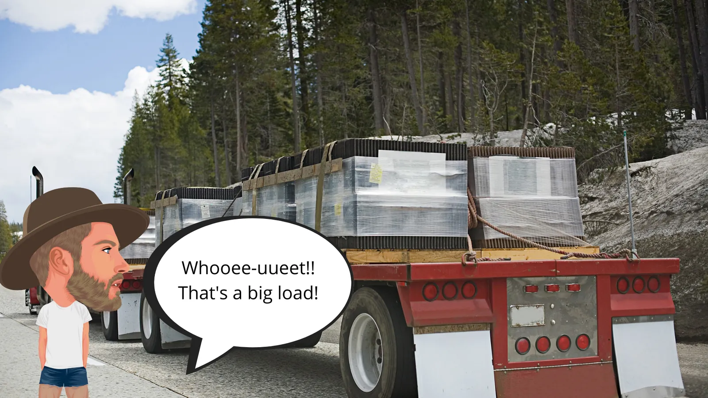
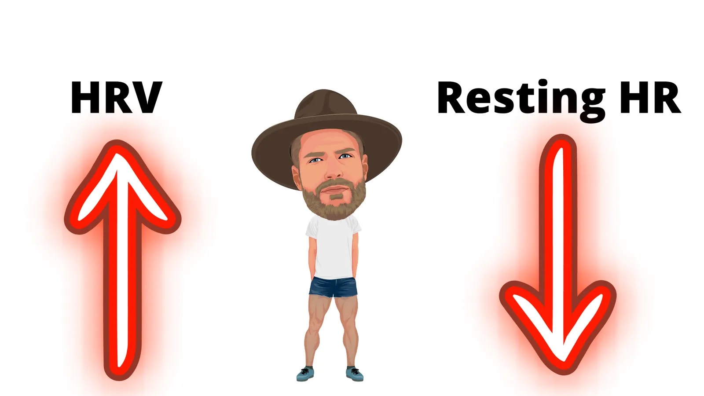
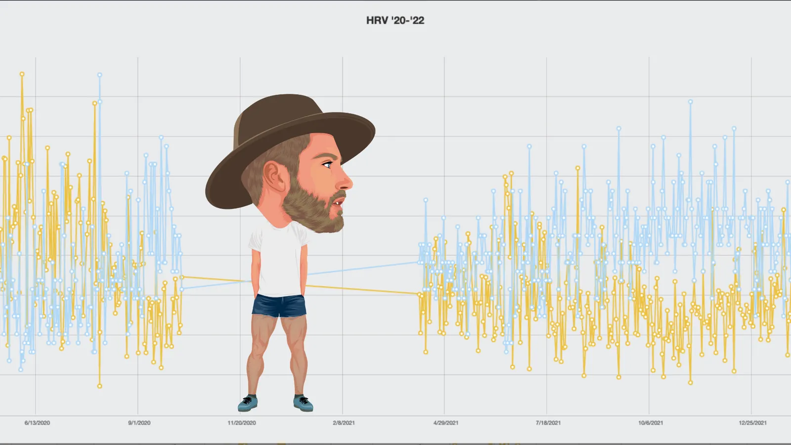
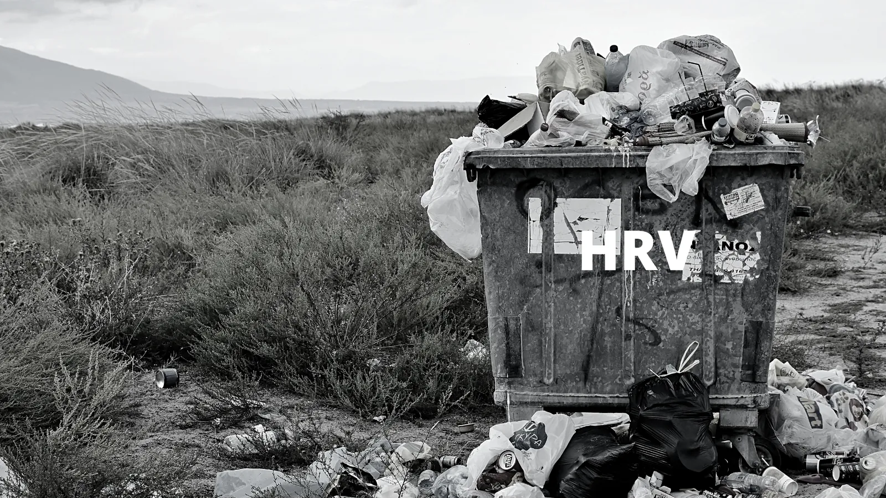
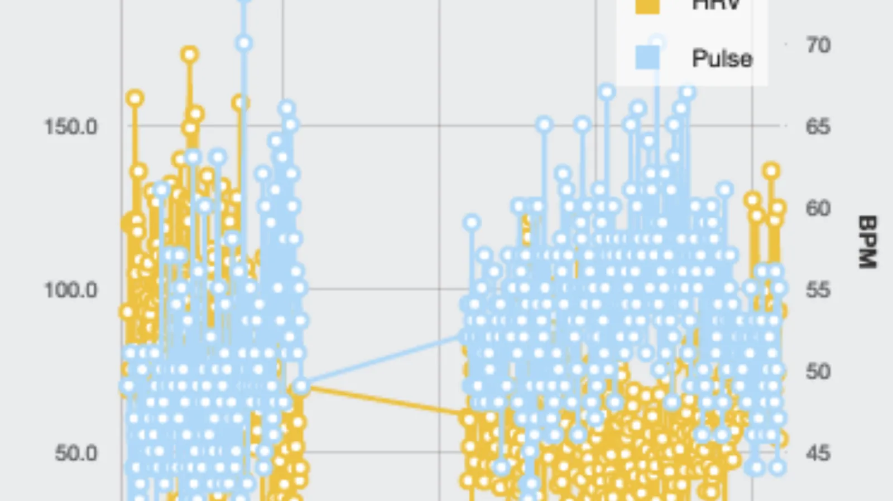
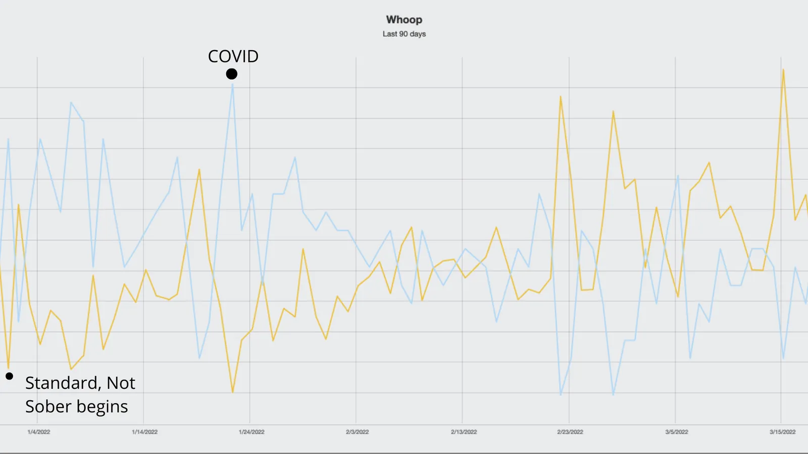

What the hell is HRV?
Heart rate variability, or HRV for short, is the rhythm of your heartbeats. It turns out that the heart doesn’t beat like a metronome; it beats irregularly. The irregularity isn’t random; it directly reflects your autonomic nervous system, which comprises two branches, the parasympathetic and sympathetic.
Think of the parasympathetic as your ‘rest and digest’ system. Our body favors activation of this branch over the sympathetic. To recover from stress, our body needs the parasympathetic; it does so by shooting signals down the vagus nerve, allowing digestion to take place (and restoring those all-important glycogen stores), slower heart rate, and inflammation regulation.
On the other hand, the sympathetic branch is your fight or flight branch. The sympathetic sends signals down nerves and stimulates the adrenal gland, releasing glucose from the liver, opening up the lungs, accelerating heart rate, and inhibiting digestion when active.
The rhythm of your heart rate provides a window into the interplay between these two nervous system branches, including the stress your body is under and the ability to adapt to the stress.
Three different types of heart rate variability reading exist, but for our purposes, we’re interested in high-frequency HRV, which measures our breathing, which is primarily controlled by the parasympathetic.
Why do we care about HRV?
Okay, let’s backpedal. Why do we care about HRV?
To answer that question, we need to return to the first principles.
When we train, we disturb the body’s equilibrium. Training adds stress; recovery unloads it.
When we add training stress, we experience a temporary decrease in performance. When we unload training stress in recovery, it allows the body to supercompensate, a complex process by which the body temporarily adapts to the training stress and increases the capacity for stress above baseline.
As you may have gathered, the timing and amount of stress loading and unloading determine how an athlete’s capacity for stress rises above baseline.
Broadly, the amount and timing of loading and unloading training stress fall under four categories:
Acute fatigue
- Definition – performing a singular hard workout that loads training stress above baseline.
- If you train hard today, it may take 24-36 hours to recover and supercompensate above baseline.
- If you don’t continue to train after that, you’ll gradually detrain and return to your former baseline.
- Training plans have to balance the acute recovery demands of a workout and its implications on when an athlete can train next.
- Who trains like this? Exercisers and weekend warriors.
Functional Overreaching
- Definition – Intentionally performing consecutive days (or weeks) of loading training stress with limited recovery for the potential of greater adaptation than acute fatigue can provide.
- Requires several days to weeks of recovery; deloading must be intentional.
- What makes ‘functional overreaching’ functional is that the athlete supercompensates or adapts to a higher baseline of fitness after the loading and unloading of training stress
- Typical examples are training camps or ‘hard weeks.’
- Who trains like this? The best athletes.
Non-functional Overreach
- Definition – Loading lots of training stress in a chronic and unstructured way.
- What makes ‘non-functional overreaching’ non-functional is that training stress is rarely or never unloaded, preventing the athlete from super compensating to a higher fitness baseline.
- Arguably the most demoralizing load/unloading stress pattern because an athlete is putting forth a lot of effort for little to minimal gain.
- Who trains like this? Type-A, self-driven uncoached athletes. So: Master’s athletes, young guns, ultra-freaks, newbies, vets, etc.
Clinically Overtrained
- Definition – Chronically overloading so much training stress with minimal to no deloading that an athlete harms critical tissues for performance, recovery, and health, sometimes irreversibly.
- This is rare.
- How does this happen? Endurance athletes are drawn to extremes, so many mortgages their health and longevity in sport for short-term gain. e.g., starving themselves, training too much, cutting sleep short, etc.
- Who trains like this? Few, as I mentioned above. However, the line between non-functional overreach and clinically overtrained.
So, in summary, functional overreaching is the best loading/unloading pattern to produce the most significant improvements in fitness over time. It’s also the least popular because it requires restraint, commitment, and usually a coach, and it’s more fun to enter into an implicit cold war with all your friends on Strava racking up the most hours.
I know I haven’t directly answered why HRV matters yet. Be patient. I’m getting there – this isn’t Twitter.
The four lists above, side by side
Four ways to load and unload training stress
Each pattern as the post defines it.
| Pattern | Definition | What follows | Who trains like this? |
|---|---|---|---|
| Acute fatigue | “performing a singular hard workout that loads training stress above baseline.” | “it may take 24-36 hours to recover and supercompensate above baseline.” | “Exercisers and weekend warriors.” |
| Functional Overreaching | “performing consecutive days (or weeks) of loading training stress with limited recovery” | “the athlete supercompensates or adapts to a higher baseline of fitness” | “The best athletes.” |
| Non-functional Overreach | “Loading lots of training stress in a chronic and unstructured way.” | “an athlete is putting forth a lot of effort for little to minimal gain.” | “Type-A, self-driven uncoached athletes.” |
| Clinically Overtrained | “Chronically overloading so much training stress with minimal to no deloading” | “an athlete harms critical tissues for performance, recovery, and health, sometimes irreversibly.” | “Few” |
Acute fatigue
Definition“performing a singular hard workout that loads training stress above baseline.”
What follows“it may take 24-36 hours to recover and supercompensate above baseline.”
Who trains like this?“Exercisers and weekend warriors.”
Functional Overreaching
Definition“performing consecutive days (or weeks) of loading training stress with limited recovery”
What follows“the athlete supercompensates or adapts to a higher baseline of fitness”
Who trains like this?“The best athletes.”
Non-functional Overreach
Definition“Loading lots of training stress in a chronic and unstructured way.”
What follows“an athlete is putting forth a lot of effort for little to minimal gain.”
Who trains like this?“Type-A, self-driven uncoached athletes.”
Clinically Overtrained
Definition“Chronically overloading so much training stress with minimal to no deloading”
What follows“an athlete harms critical tissues for performance, recovery, and health, sometimes irreversibly.”
Who trains like this?“Few”
Every cell quotes the post’s lists; quotes may be shortened, never reworded.

Loads on loads on loads
Coaches, athletes, and exercise physiologists are always trying to determine what predicts success in endurance sports. They’ve figured it out, sort of. Do you know the most significant predictor of an athlete’s success in key events?
It is not getting injured/sick. And yes, that assumes that you’re a motivated, process-focused athlete that’s training well for years. If you’re not doing that, well, you have other problems.
Obvious, right? Were you expecting some super-secret workout, supplement, or periodization scheme? Nope! Occam’s Razor bitches – the most powerful predictor is so simple almost everyone overlooks it – don’t miss tons of training because you’re visiting the physical therapist or horizontal in your bed next to a line of Kleenex boxes.
You would think that avoiding injury/sickness is just a matter of making sure your training stress pattern is function-overreaching, but that’s not the whole picture. To your body, stress is stress. It doesn’t care if it’s from training, work, diet, or relationships – it calls counts.
The combined stress your body must adapt to is the Total Load, training stress plus Life stress. When an athlete’s fitness goes sideway, and they bomb an important event, it’s usually their Total Load, not their training load, that’s the real culprit.
For example, an athlete might nail every training session, and their TrainingPeaks calendar is a sea of green (meaning they’re compliant) with consistent positive comments, but then, inexplicably, their performance plunges. What is a coach supposed to make of that? Then you find out after the fact they’re a business owner, and a work crunch is on, and they’ve been pulling all-nighters a couple of times a week for the past couple of months.
Oh. Whelp, NOW it all makes sense. Progression isn’t going to happen if you’re skipping sleep, which is the most critical recovery factor.
A relevant term to raise here is Rate Limiting Factors, which are athlete-specific training variables that significantly limit an athlete’s progression. Most people’s rate-limiting factors are hidden in their Total Load, not their Training load. The athlete’s time management, diet, lifestyle choices, relationship stress, and work stress fundamentally limit how hard they can adapt to their training.
HRV Interpretation
So, should you use HRV to decide how to train on a day to day? What trends do you want to look for?
Controversial take here: you shouldn’t use HRV to determine how you train every day – you should use it first as a marker of overall health and second as a general fitness indicator.
I know people have done studies showing individuals that used HRV to guide their daily training decisions improved more than those that didn’t, but that’s because they didn’t look at the study; they looked at the headline. The study subjects were all beginner to intermediate athletes, so that group’s results can’t automatically externalize to every endurance athlete, especially gravel cyclists requiring larger training volumes to prepare their bodies for the rigor of long, hard events.
Beyond that, though, letting your HRV score dictate how you train is counter to at least two fundamental, immutable laws of training: overload and lifestyle design.
Training overload means that you have to introduce more fatigue to your system than baseline to trigger adaptation to get fitter. When you add more fatigue than you’re used to, you’re tired. Well, that will show up in your HRV score as a lower value, indicating less variability. If you decided you’d take an easier day or take a day off because you had a lower HRV score, you’ll stop overloading your system. If you stop overloading your system, you’ll limit your potential for adaptation. If you’re training correctly by loading stress in the pattern of functional overreach, you will be tired sometimes, which will show up in your HRV.
Further, as we’ve established, health correlates with a high, stable HRV and Total Load, not training load, contributes the most to injury or illness. More than anything, Total Load is an indication of your Lifestyle design: how much you sleep, work stress, relationship quality, nutritional habits, substance habits, etc.
Many athletes’ HRV stays chronically low not because of their training but their lifestyle choices. If they choose to skip or modify a workout because of a low HRV score, that’s, in all honesty, a product of their lifestyle choice, sure, maybe they should take the day off or modify the workout, but this action pattern is a slippery slope. What they need to do isn’t skip or modify their workout – they need to change their lifestyle. In this instance, chronic low HRV scores aren’t a result of a productive, specific training stimulus; it’s a failing in their lifestyle design. If you modify the workout and use HRV as an excuse but don’t change your lifestyle, you’re bullshitting yourself.

How should HRV and resting HR look?
You don’t hear this often, but health is the foundation of peak performance. You will never adapt to your potential if you’re not healthy because fundamentally, health is the capacity to absorb and adapt to stress. Happily, HRV is an excellent indicator of health.
Ideally, your HRV value should be higher/trending and generally stable. For example, if you have an HRV score that’s constantly up and down, rather than more or less tightly clustered around your average HRV, it’s safe to assume that you need to address something off with your Total Load. While you can make progress with an unstable HRV, your progress won’t be what it could be because your body is going through such extremes. This should make sense intuitively – the best athletes have stable lives, stable training, and stable performances.
HRV is a sensitive and rapid indicator of Total Load. If you start training a lot more, it will go down. If you’re about to get sick, it’ll rapidly decrease. If you’re making terrible lifestyle choices, HRV will show it.
In contrast to HRV, resting heart rate is a slower aerobic stress indicator influenced by parasympathetic and sympathetic branches. Unlike HRV, you want your resting heart rate to be lower, not higher. Elevation in resting heart rate from stress or sickness tends to be delayed.
I can’t tell you the ideal HRV or resting heart rate levels. Different companies use different scores. I’m sure some exercise physiologist reading this would object and pop off that medical-grade equipment using this protocol is the most valid form of measuring HRV and resting HR. I’ll agree but annoyingly add that I don’t care. Data is only valuable to the extent that it changes behavior. Even Whoop’s notoriously shady sensors and murky algorithms will tell you that your body isn’t thriving on four hours of sleep after you close down the bar.
In general, the absolute numbers you see with HRV increase with increases in fitness, and your resting HR decreases. And yes, sadly, age correlates to lower absolute HRV numbers and higher resting heart rates. Again, these are all general trends; you might be the exception.

How should HRV and Resting Heart Rate trend?
Individual, non-continuous HRV and resting heart rate values are worthless – you need a baseline and only get baseline data if you measure yourself every day.
Once you have some data points, you’ll use the moving average for comparison. You want to see in your HRV score a high baseline with less spread because that correlates to an athlete’s resilience. For example, suppose you have HRV data for a month and notice that your baseline HRV is 50, but you’re achieving that average with lots of HRV scores of 101 and 1. In that case, that’s not ideal because your HRV variance, or the difference in scores above baseline, is too extreme. When your HRV variance is high, your body cycles through periods of extreme stress and then extreme recovery.
I know that might sound like the training loading pattern of functional overreach, which is the ideal training pattern, but intentionally overloading your training stress above baseline and resting doesn’t manifest in your parasympathetic the same way. A resilient athlete will experience a decrease in HRV and a slight elevation in resting heart rate, but HRV won’t drop through the floor. To continue the previous example, if my baseline HRV was 50 and I wasn’t experiencing huge HRV variance, my HRV would vary between 40 and 60 even during heavy training or recovery periods.
If your HRV scores are generally high or increasing and not varying that much, that means that your body is healthy and stable, which is what’s required to become the fittest you can be over time.

My HRV is low and varies a lot. How can I improve it?
To return to a previous point, your Total Load of stress determines your HRV the most, not your training. Unfortunately, HRV metrics reveal a harsh truth about endurance sports – the Life you choose determines the training load you can absorb and adapt to. For example:
- Do you sleep enough?
- Do you hate your job?
- Do you drink?
- Are your intimate relationships stressful?
- Do you have supportive friends with shared values?
- Do you have kids?
- Do you eat right?
- Do you even drink water?
- Got your drug use in check?
- Is your environment conducive to your goals?
- Do you have healthy ways to recharge?
- Do you have healthy self-worth?
That bulleted list is a nightmare for most adult athletes to answer honestly because it makes salient that their lifestyle choices are probably exerting a significant detrimental effect on their athletic potential.
Look, for most athletes, training and racing is a release, and the point of this article isn’t to try to tempt you into becoming a unidimensional monk, all for the sake of ‘finding out what you could be.’ Instead, I want to suggest that lifestyle choices matter, we can measure them in the form of HRV, and you can make changes to one of the factors without burning down your Life that could really make a difference.
The formula is easy
- Determine your most detrimental lifestyle factors – this will be known as a ‘Rate Limiting Factor.’
- Determine how you can change it.
- Make the change.
Don’t believe me? I’ll pick on myself.
HRV Case Study
Ever since the holidays began, I started stacking up beer cans. I won’t get into numbers because it’s embarrassing but let’s just say I was getting calls from Miller Brewing company asking me if I wanted to call into their board meetings because I was buying up so much of their supply.
Anyway, the New Year came around, and like the basic bitch I am, I decided, fugg it, I’m going ____! Fill in the blank.
You thought I meant sober, huh? Wrong – do you think I’m some sort of quitter? Actually, I didn’t go sober; I just decided that no matter what happened, in 2022, I was never going to drink more than what the Surgeon General of the United States recommends men to drink every week – 14 standard drinks. To make this seem more appealing, I came up with a motto – “Standard, not Sober.”
Why not just go sober? Because I like beer. Besides, every year of my adult life, I’ve done a month sober, but after the month ended, I’d go right back to my regular pattern of drinking however much I wanted whenever I wanted, so I wanted a rule more than anything.
The first week sucked, but then I remembered an up-and-coming brewer called Athletic Brew, which claims to make non-alcoholic, drinkable beer. I tried it. The marketing didn’t lie. It was freaking awesome.
Then something remarkable happened – the third week in, I stopped craving real beer. Instead, I wanted Athletic Brews. My drinking dropped from Standard (14/week, which, I’d like to remind you, was still a reduction from what I was drinking before) to about three total for an entire week.
I was super curious to see if dramatically decreasing my consumption of the naughty water would have any effect on my HRV and resting heart rate – it didn’t. My HRV went down, and my resting HR went up.

I’m fugging with you – my HRV from late December to Mid-March improved THIRTY-FOUR PERCENT, and my resting heart rate went down FIVE BEATS PER MINUTE in only ten weeks.
Oh. That might make a difference.
But let’s not get lost in the numbers, look at the big picture. Notice anything?
What should jump out at you immediately is that before I went Standard, Not Sober, my resting heart rate was regularly so high that it covered up HRV values. Sure, that’s partly a function of the scale of the axis, but set that aside for a moment. Clearly, in the year before SNS, the yellow never rose above the blue. After SNS, it did. You don’t even have to get close the data to see that something radical changed.

But let’s zoom in. Visually, the ‘teeth’ of the HRV should draw your attention. In the year before SNS, my HRV rarely broke 90. Post-SNS, you see 7 separate instances where my HRV punched through not just 90, but 100+. Clearly my HRV started becoming variable to an extent it hadn’t before; something was afoot in my parasympathetic.
Now look at the blue line, my resting heart rate. Setting aside a late January spike from COVID, it started reliably moving downward, sometimes even breaking into the low 40s, numbers I almost never saw pre-SNS. The shape of resting HR took on the inverse ‘teeth’ shape of HRV, which is exactly what I’d want to see. Like HRV, something was changing for the better with my aerobic capacity.
And that’s just HRV and resting heart rate; imagine the effects on my training quality, diet, and general personality! If you thought I was obnoxious before, imagine me now except more chipper!
So in 10 weeks, I made one change that gave me the recovery I’d expect in my early 20s significantly improved my diet, mood, and training quality. In some respects, it’s like I started doping.
Should I invest in measuring my HRV?
This is essential: why didn’t I just identify and change my drinking habit before? Did I need to monitor HRV and resting HR to make that change?
Obviously not. Any idiot could have inventoried my lifestyle habits, identified drinking as my greatest rate-limiting factor, and said, “Hey, uh, maybe you should chill out on that if you want to get closer to your cycling potential.”
As I’ve emphasized, athletes are their own worst blind spots, and the effect of your lifestyle habits aren’t salient when they’re routine. Part of what contributes to that blind spot is that the acute result of that change, even if it’s incredibly powerful, might not be evident enough for you to notice when you make a change. If you can’t feel or see the results, you doubt whether it really matters.
However, when you’re monitoring your HRV, there’s no question that something is happening. That data stream, even collected imperfectly, shows a strong and clear directional trend that confirms that results are happening.
I harp on data overload in my articles but using HRV to test lifestyle change is a clear example of data’s utility. Again, data are only useful if they inform action. For instance, cyclists love using a power meter because recording it provides a black and white indication of how they’re performing. It would be much more challenging to know if their fitness was improving without a power meter.
Like a power meter, HRV shines a light on the effect of various lifestyle changes that might improve your health and performance. Change your diet, sleep more, cut out something, meditate, etc. Then watch your HRV trend over time to see your body’s internal response.
Seeing progress reinforces lifestyle change. As the psychological literature points out, achieving a goal is only a small part of what makes us happy – noticing incremental improvement toward your goal contributes the most to happiness in any endeavor.
So, should you monitor your HRV when at best, it’s going to tell you the things you already know are holding you back?
If you’re serious about your performance, yes.
Look, you might tell yourself ‘I don’t need to measure something to tell me to sleep more, eat better, drink less, drink more water, etc.”. You’re right – you don’t. But why aren’t you doing it yet?
I’ll turn to an old maxim here – you manage what you measure. It’s harder to spend too much money if you check your bank account every day. It’s harder to overeat if you weigh yourself every morning. If you’re serving up an HRV score every morning, it’s harder for you to keep doing what is holding you back because you’re constantly reminded that you’re not all there. Most people can only look at rock bottom feedback about their lives so long before choosing to double down on what they’re doing or turn painfully (but correctly) into change.
Some figures in this post were corrected on October 9, 2026.